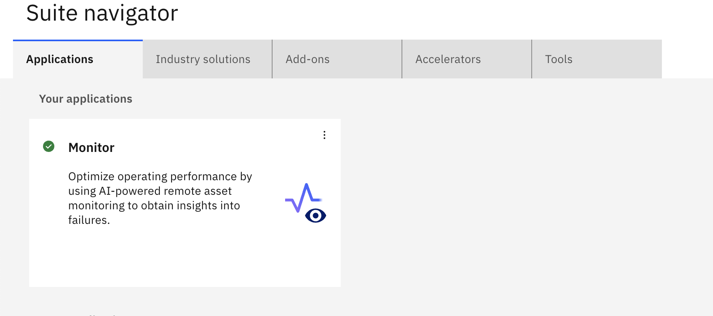
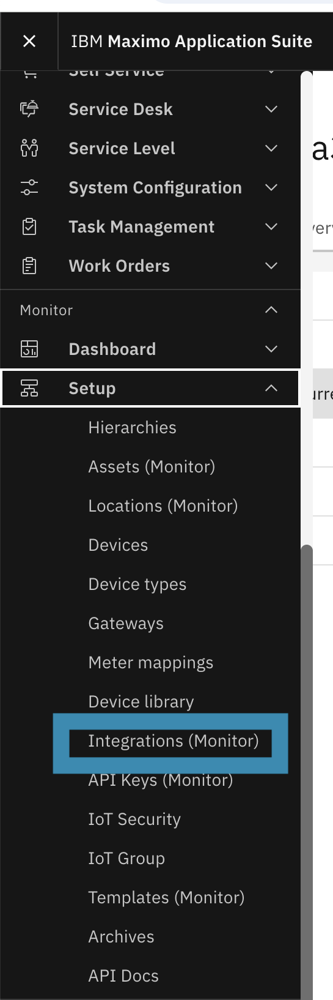
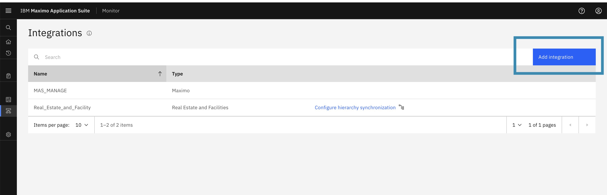
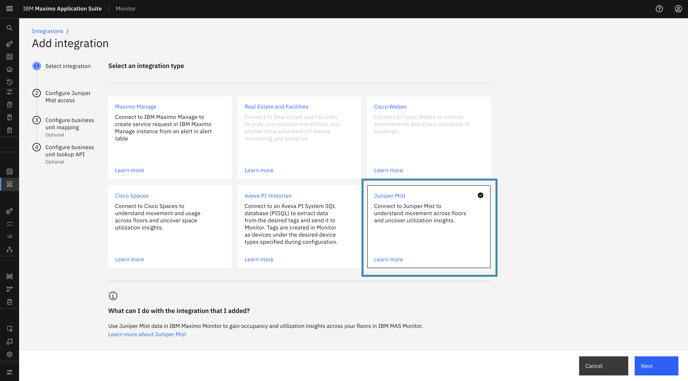
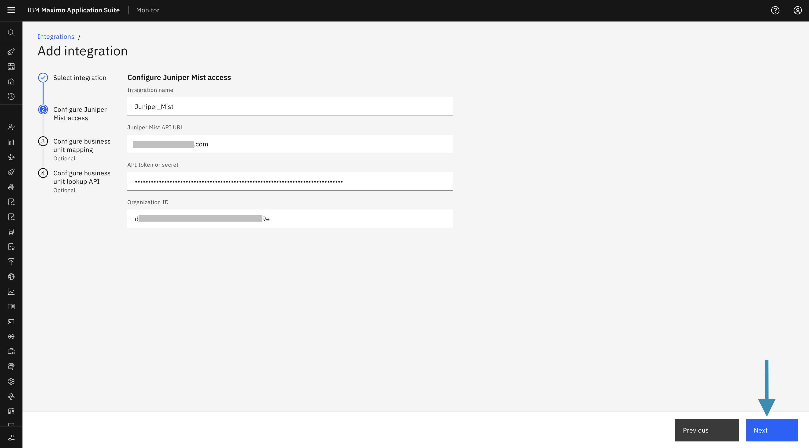
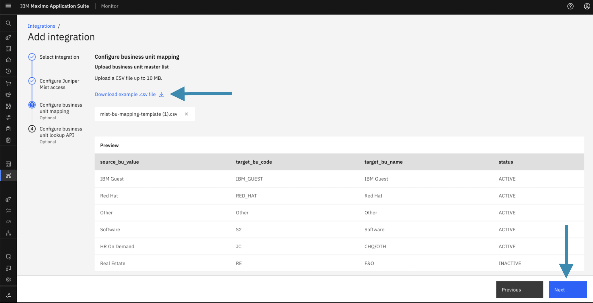
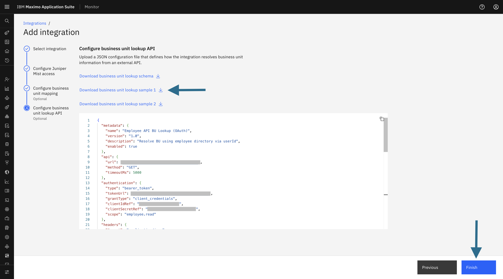
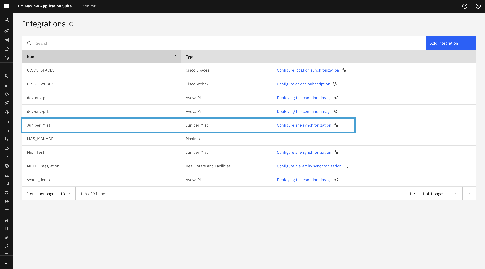

Objectives
In this Exercise you will learn how to configure the Juniper Mist integration in IBM MAS Monitor, upload Business Unit mapping configurations, and set up the dynamic Business Unit Lookup API.
Steps to Configure the Integration
-
Log in to IBM MAS Monitor
Access your MAS Monitor environment by logging in with your credentials in Maximo Application Suite.
-
Navigate to Integrations
Open the left-side navigation menu. Scroll to the Monitor applications list and select Setup → Integrations from the menu options.
-
Add a New Integration
On the Integrations screen, click the Add Integration button to start configuring a new integration.
-
Select Juniper Mist as the Integration Type
From the Integration Type list, select Juniper Mist and click Next.
Step 1: Configure Juniper Mist Access
In this step, provide the required Juniper Mist connection details:
- Integration Name: Specify a unique name for the integration.
- API URL: Enter your Juniper Mist cloud URL (for example,
https://api.mist.com). - API Token / Secret: Enter the API access token obtained from your Juniper Mist organization.
- Organization ID: Enter the organization UUID from your Juniper Mist account.
Click Next to proceed.

These details are used to establish connectivity between Juniper Mist and IBM MAS Monitor.
Step 2: Configure Business Unit (Optional)
The Configure Business Unit step is used to upload the Business Unit (BU) mapping configuration file.
- A sample configuration file is available for download and reference.
- The uploaded file is used to resolve users to their respective Business Units.
- After uploading the file, the system displays the Business Units parsed from the configuration, allowing administrators to:
- Review the Business Unit mappings
- Validate the uploaded configuration
Click Next to proceed.

This is an optional step, and users can skip it if not needed.
Step 3: Configure Business Unit Lookup API (Optional)
The Configure Business Unit Lookup API step allows administrators to configure the API details required to resolve user identities to Business Units dynamically at runtime:
- BU Lookup API Endpoint: Enter the endpoint URL for user identity resolution.
- Authentication Details: Provide required authentication credentials (API key, bearer token, etc.).
These settings enable IBM MAS Monitor to dynamically determine the appropriate Business Unit for users during runtime.
Click Finish to complete the integration configuration.

This is an optional step, and users can skip it.
Verify Integration
Once the integration is added successfully, its details will appear on the Integrations list page.

Congratulations, you have successfully configured the Juniper Mist Integration in Maximo Monitor.